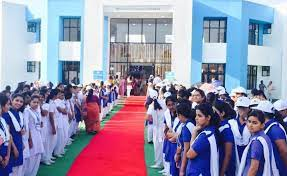

|  | |
|
|
|
Vidyapith aims at the synthesis of spiritual values and scientific achievements of both
the East and the West.
Its educational programme is based on the concept of "Panchmukhi Shiksha"
and aims at all round harmonious development of personality.
Emphasis on Indian culture and thought characterized by simple living and khadi wearing are
hallmarks of life at Banasthali.